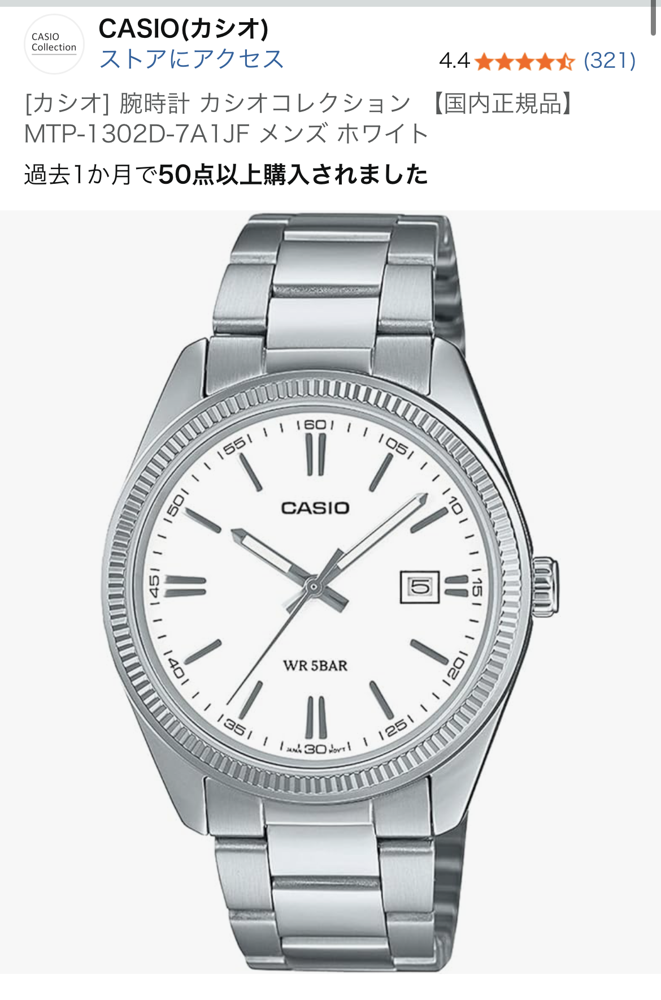

カシオ MTPシリーズは腕時計入門に最適？デザイン・コスパ・注意点をレビュー
公開日：2026-03-01（レビュー日ベース）

ぱっと見は「値段以上」──ホワイト文字盤×バーインデックスの安心感
今回レビューするのは、Amazonで星5つ中4つ評価だったカシオのMTPシリーズ、ホワイト文字盤・バーインデックスのシンプルなアナログ腕時計です。 口コミでは「デザイン、コスパのぱっと見は値段以上なのは間違い無い」と評価されており、実際に写真で見ても いわゆる“チープカシオ”の価格帯でありながら、ビジネスカジュアルにも十分使える落ち着いた雰囲気があります。
ホワイト文字盤に細めのバーインデックスという組み合わせは、スーツ・シャツ・ニット・ジャケットなど どんな服装にも合わせやすく、「とりあえず1本、外さない腕時計が欲しい」という人にとって非常に扱いやすいデザインです。 日付表示付きのモデルであれば、実用性もぐっと高まり、通勤・通学・休日のすべてを1本でカバーできます。
日経大手時計メーカー3社の中で「最も低コスト帯」だからこそ試しやすい
口コミでは「日経大手時計メーカー3社の中で最も低コストのバラエティが豊富のため、腕時計の入門として最適」とも書かれていました。 セイコー・シチズン・カシオの3社の中で、カシオは特に低価格帯のラインナップが充実しており、 数千円台でアナログ・デジタル・クロノグラフ・メタルバンドなど、好みに合わせて選べるのが大きな魅力です。
「腕時計にそこまでお金はかけたくないけれど、スマホだけだと時間確認が不便」「まずは1本、気軽に試したい」 という人にとって、MTPシリーズはまさに“ちょうどいい入口”と言えます。 価格が抑えられている分、気軽に買い替えやモデル違いの買い足しもしやすく、ファッションの一部として楽しみやすいのもポイントです。
気になった点：針が「想像以上にペラペラ」だったという口コミ
一方で、実際の購入者レビューでは「ただ針が想像以上にペラペラだったのが気になりました」という指摘もありました。 低価格帯モデルでは、ケースやガラス、針などのパーツに高級機ほどの厚みや重厚感を求めるのは難しく、 近くでじっくり見ると「価格なり」の部分が見えてくるのは事実です。
ただし、これはあくまで“質感へのこだわりが強い人”が気にしやすいポイントで、 日常使いで時間を確認するという目的においては、視認性や実用性に大きな問題が出るわけではありません。 「細部まで金属の厚みや高級感を求めるなら、もう1〜2ランク上の価格帯を検討」「まずは気軽に腕時計生活を始めたいならMTPで十分」 という線引きで考えると、納得しやすいバランスだと感じました。
チープカシオ・G-SHOCKとの違いと、MTPシリーズを選ぶ理由
カシオといえば「チープカシオ」や「G-SHOCK」が一般の人にも広く認知されており、 すでにどちらかを持っている人も多いはずです。チープカシオは超軽量・超低価格で、 G-SHOCKは耐衝撃性・防水性に優れたタフなモデルとして定番になっています。
それに対してMTPシリーズは、「落ち着いたアナログデザインで、オン・オフどちらにも使える入門機」という立ち位置です。 チープカシオよりも少しだけ“きちんと感”が欲しい、G-SHOCKほどスポーティではないものが欲しい、 というニーズにぴったりハマります。特にホワイト文字盤・バーインデックスのモデルは、 清潔感があり、ビジネスシーンでも悪目立ちしないため、就活生や新社会人の最初の1本としても選びやすいでしょう。
こんな人におすすめ：腕時計入門・サブ機・プレゼントにもアリ
以上を踏まえると、カシオ MTPシリーズ（ホワイト文字盤・バーインデックス）は次のような人に特におすすめできます。
- まずは失敗しにくいデザインで腕時計デビューしたい人
- スマホだけでの時間確認に不便さを感じ始めた社会人・学生
- G-SHOCKやチープカシオは持っているが、もう少し落ち着いたアナログ時計が欲しい人
- 予算を抑えつつ、日経大手時計メーカー製の安心感も欲しい人
針の質感など、細部にこだわると気になる点はあるものの、価格・デザイン・ブランドの安心感を総合すると、 星5つ中4つという評価はかなり納得感があります。「とりあえず1本、外さない腕時計が欲しい」 という人にとって、カシオ MTPシリーズは非常にコスパの良い選択肢と言えるでしょう。